| 『火山で読み解く古事記の謎』トラベルガイド【文春e-Books】 | |
| 蒲池明弘 | |
＊この電子書籍は縦書きでレイアウトされています。
＊読む際のご注意、お断り等については こちら をお読み下さい。
文春e-Books
『火山で読み解く古事記の謎』トラベルガイド
神話の舞台を歩く
蒲池明弘
はじめに
九州、出雲、熊野の火山活動によって形成された風土が古事記神話の背景にあるのではないか──。文春新書『火山で読み解く古事記の謎』はこうした仮説的なアイデアを出発地点として火山の現場を歩きながら、古事記神話のさまざまな謎に挑戦しています。
この電子書籍は『火山で読み解く古事記の謎』のＰＲ版ですが、プラスアルファの情報をお届けする副読本（サブテキスト）の目的をあわせもっています。文春新書版を既読の方も未読の方も、火山と古事記にまつわる「旅のガイド」としてお楽しみいただければありがたいです。
この電子書籍で取り上げる火山と古事記にゆかりの土地は、九州南部（鹿児島県、宮崎県）、出雲エリア（島根県、鳥取県）、熊野エリア（和歌山県、三重県）の三か所です。九州はともかく、出雲と熊野に火山なんてある？ そう思われる方もいるはずです。
常識的な印象とは食い違うかもしれませんが、出雲エリアは火山の多いところです。ただし、その多くは、古い用語でいうところの休火山、死火山。熊野エリアでは千五百万年まえという太古に、とてつもないスケールの噴火が起きており、それは日本列島史における最大の火山活動であるともいわれています。
九州、出雲、熊野には、火山に由来する風景があり、古事記神話の舞台と重なっています。その不思議さをこの電子書籍でお伝えできればとおもいます。
『火山で読み解く古事記の謎』は、七章立てで以下のような内容です。
第一章 アマテラスと縄文時代の巨大噴火
第二章 出雲──八雲立つ火山の王国
第三章 縄文時代に出現した天孫降臨の山
第四章 女神イザナミ──黄泉の国は火山の国か
第五章 熊野──謎の巨大カルデラの記憶
第六章 大地を鎮める王──永遠に遍歴するヤマトタケル
終章 日本列島における火山の記憶
古事記をめぐる最大の謎。それは、アマテラスが日本の神々の世界に君臨し、天皇家の先祖神として尊ばれていることです。『火山で読み解く古事記の謎』では、火山と古事記神話が結びつくデータを踏まえて、この謎に対し、ひとつの解答を提示しています。
ミステリー小説というわけではありませんが、客観的なデータの提供を心がけていますので、古事記をめぐる謎解きを楽しんでいただけるとおもいます。この電子書籍には、写真を中心として、謎解きのための追加データをお届けする役割もあります。
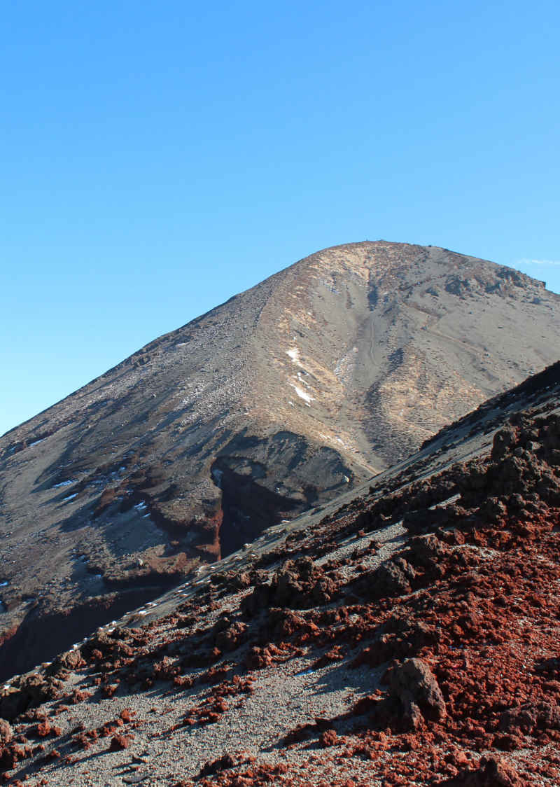
この写真は、天孫降臨神話の伝承地、高千穂峰を取材のために訪れたとき、頂上付近を撮影した写真です。発泡したマグマが固まってできたスコリアは、鉄分が酸化して赤味を帯びています。
取材の過程で撮りためたこうした写真を紹介しながら、火山と古事記神話が交錯する風景の数々をご案内させていただきます。
最初の行き先は、『火山で読み解く古事記の謎』でメインテーマとしている鬼界カルデラ。縄文時代に発生した巨大噴火の現場です。
目 次
タイトルをクリックするとその文章が表示されます。
九州編
鬼界カルデラ・硫黄島
今から七千三百年まえ、つまり縄文時代の中ごろ、九州最南端の沖合でとてつもなく巨大な火山噴火が発生しました。鬼界カルデラ噴火です。
どれくらい巨大な噴火であったかというと、放出されたマグマの総量は東京ドーム十万杯分と説明されています。ドーム十万杯！ イメージするのも困難で、かえって混乱してしまいますが、この噴火による火山灰は関東、東北のみならず、朝鮮半島にも降り積もり、火砕流は海を渡り、九州南端の半島部を襲いました。
一万年に一度くらいというきわめて低い頻度ですが、日本列島のほぼ全域に火山灰を降らせ、大地に巨大な陥没、すなわちカルデラを生じさせる超巨大噴火が繰り返し起きています。その最も新しい現場が鬼界カルデラなのです。
縄文時代以降の一万数千年を日本の歴史だとすると、鬼界カルデラ噴火は日本史上において最大の噴火ということになります。それどころか、過去一万年において、世界最大の噴火であったという研究者もいます。
巨大な噴火を目撃した九州に住む縄文時代の人たちは、その光景を語りつぎ、それが古事記神話のなかに残っているのではないか。その可能性を探るため、鬼界カルデラの現場を訪ね、専門家への取材を重ねました。そうして集めたデータを『火山で読み解く古事記の謎』のなかで報告しています。
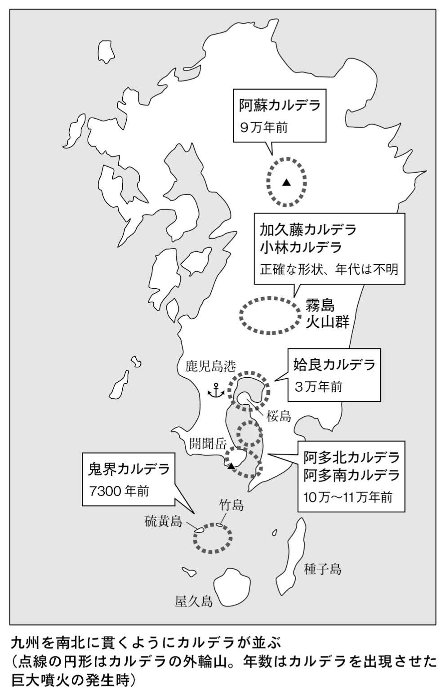
鹿児島県南端の大隅半島から南に約三〇キロメートル。鬼界カルデラは、鹿児島県鹿児島郡三島村という離島エリアに位置します。硫黄島、竹島、黒島という三つの島による小さな自治体です。
硫黄島は「俊寛伝説」の島です。平清盛ひきいる平氏政権の打倒を企てる密議が露見し、僧侶の俊寛をはじめとする関係者が流された「鬼界ヶ島」はこの島だという話になっており、地質学用語としての鬼界カルデラはこの伝説に由来します。「鬼界」という行政上の地名があるわけではないのです。
鬼界カルデラのある三島村へ向かうフェリーは、鹿児島市の鹿児島港からしか乗船できません。おおむね週に四日、一日一便のフェリーの出航時間は午前九時三十分ですから、鹿児島県およびその近辺に住んでいるのでなければ、前日までに鹿児島入りしておく必要があります。
新幹線で鹿児島市まで行けますし、空の旅についても選択肢が増えています。鹿児島空港には複数のＬＣＣが乗り入れており、価格競争が激しいのか、私の場合、東京‐鹿児島の片道一万円以下のチケットを一週間ほどまえの時点でも予約できました。もっとも観光シーズンではない冬場だったからかもしれません。
フェリーの料金は片道三千六百円。台風シーズンでなくても、海がすこし荒れると欠航となることは、私自身の体験として『火山で読み解く古事記の謎』に書かせていただいたとおりです。毎日の運行ではないので、行きも帰りも余裕をもたせたスケジュールをお勧めします。
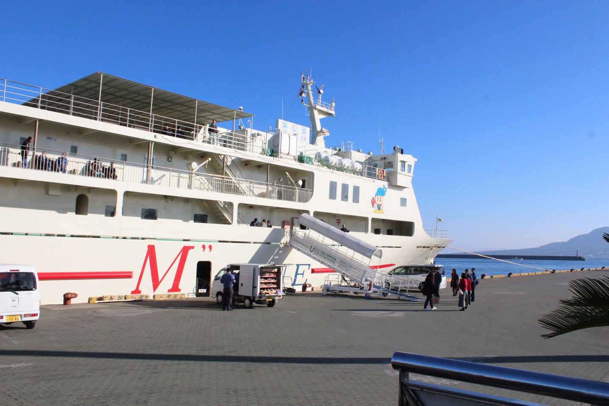
フェリーが出発する鹿児島港の目の前には桜島。日本でいちばんエネルギッシュなこの火山を左手に見ながら、鹿児島湾を南に走ります。
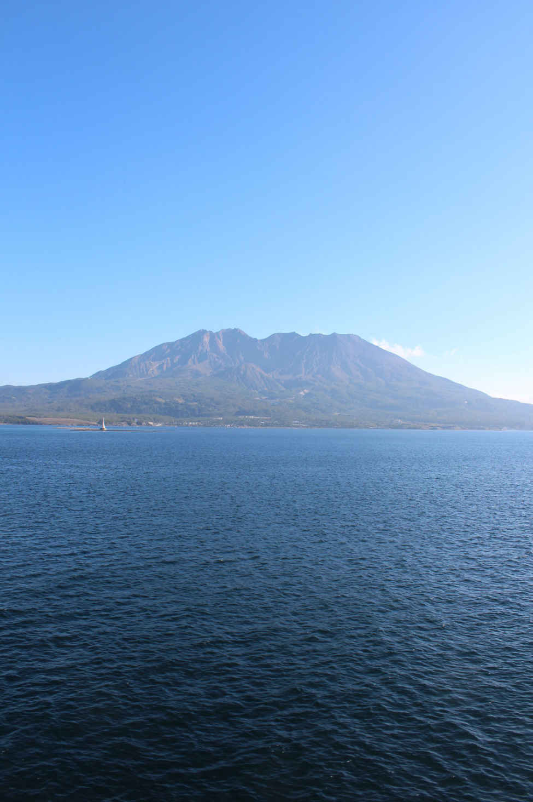
二時間くらいで、富士山型の成層火山である開 聞 岳 が見えてきます。別名、薩摩富士。近年はおとなしくしているので、火山のイメージは希薄かもしれませんが、縄文時代に出現したまだ若い活火山です。フェリーのデッキから、開聞岳が山裾を海にひたす優美な光景を堪能できます。
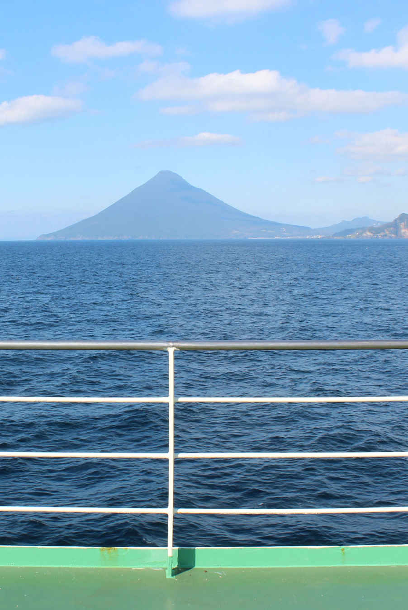
鹿児島港から鬼界カルデラの硫黄島までの船旅は四時間ほど。その半分くらいは細長い鹿児島湾のなかを走っており、薩摩富士こと開聞岳を過ぎたあたりから、波の荒い外海となります。
鹿児島湾から外海に出ると、まもなく硫黄島の島影が前方に見えてきます。次第に輪郭が鮮明になるにつれて、標高七〇四メートルの硫黄岳の山頂だけでなく、ゴツゴツした山の横腹から漂う噴気を確認できます。焦げ茶色の岩肌とあざやかなコントラストをなす黄色の正体は、火山が生み出す硫黄の結晶です。
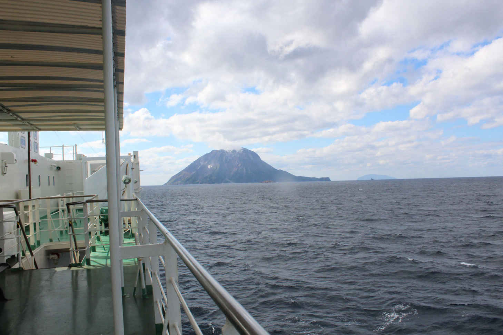
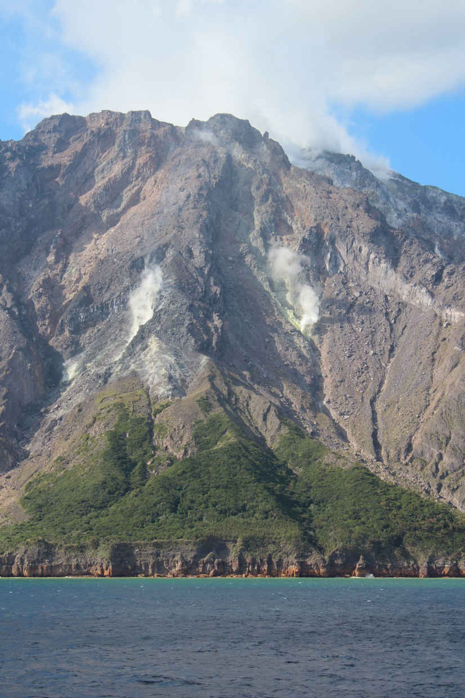
「鬼界カルデラの島」として紹介される硫黄島ですが、島をとりまく風景に、阿蘇カルデラのような盆地状の地形は存在しません。二〇×一七キロメートルのカルデラ地形は、巨大な窪地として海面下に隠されています。鬼界カルデラを出現させたのは、海底火山の噴火だったからです。
フェリーはまず、竹島に寄港し、硫黄島に向かいます。海底に存在する鬼界カルデラの外輪山のいちばん高い部分が、硫黄島、竹島という二つの島になっています。氷山の一角ならぬ海底カルデラの一角です。
硫黄島の港に入ると、眼前に高さ八〇メートルほどの崖があり、横に長い壁のようになっています。これがカルデラの縁辺です。
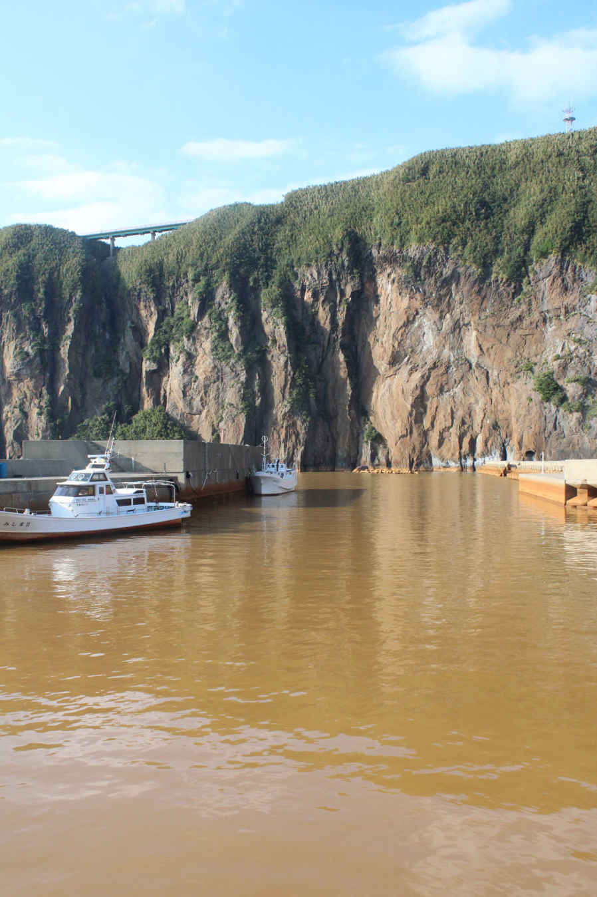
硫黄島を訪れた人を最初に驚かせるもの、それは不思議な色に染められた海水です。写真で見ると、大雨のあと、泥で濁った川や海の色のような感じもしますが、現実の風景としてこの海水を見ると、はるかに黄色の色調が強い印象です。
なぜ、硫黄島の港の海水は、黄色に変色しているのでしょうか？ 地元の研究者からは、「海中で温泉が湧出しており、温泉の中の鉄分などが海水や熱による化学反応で黄色くなり、それが海水を染めている」という説明をうけました。
実は、鹿児島県や他県の別の島でも、俊寛の流刑にまつわる伝説が語られています。しかし、海水が黄色に変色していることから「黄海ヶ島」と呼ばれ、のちに「鬼界ヶ島」に転じた──という伝承によって、硫黄島が最も有力な候補地となっているのです。
硫黄島の港のそばには、鬼界カルデラの壁面をなす断崖絶壁を背景として、俊寛の像が立っています。この壁面は溶岩として流れたマグマが固まった流紋岩。赤みを帯びた荒々しい岩肌が印象的です。

硫黄島のシンボル、硫黄岳のふもとまでは、港から徒歩一時間足らずで行けます。硫黄岳は激しく噴気をあげる活火山であり、火口周辺への立ち入りは制限されています（二〇一七年五月現在）。ジオパークに認定されたことをうけて、登山コースや展望施設の整備が進みつつあり、活火山の雰囲気を感じることはできるはずです。
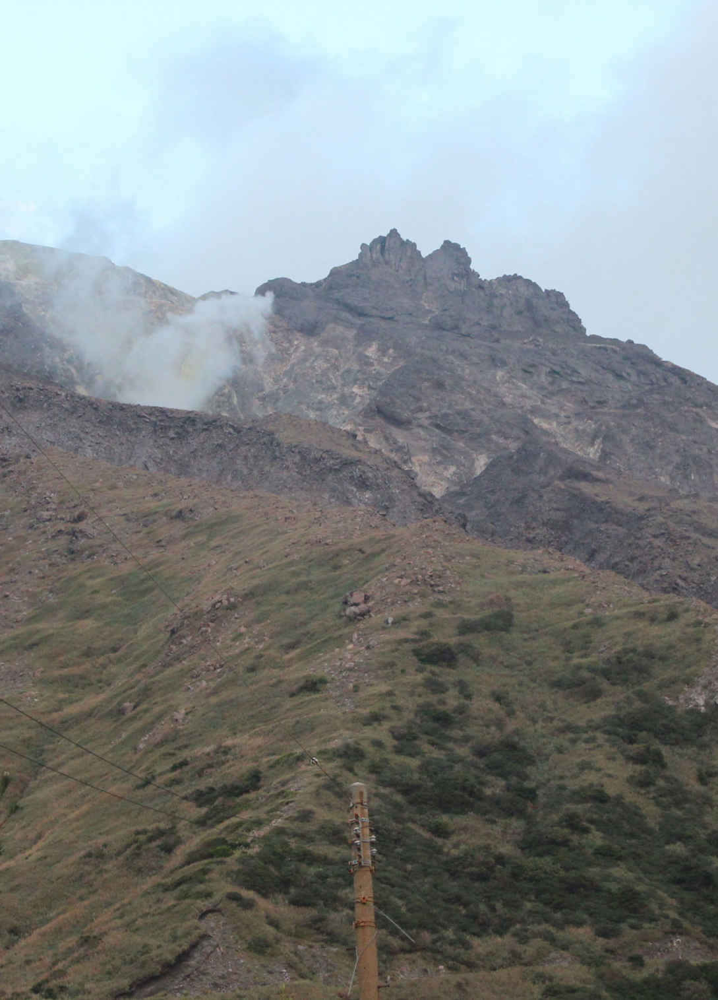
硫黄岳という名前のとおり、この山は硫黄鉱山としての歴史をもっており、一九六〇年代まで採掘がつづいていました。
硫黄は火薬に不可欠の材料です。石油化学の技術で硫黄が抽出できるようになるまで、火山エリアで採取できる硫黄は貴重な天然資源であり、日本は世界屈指の輸出国でした。資源的な価値は失った硫黄ですが、この島に独特の景観をつくりだしています。
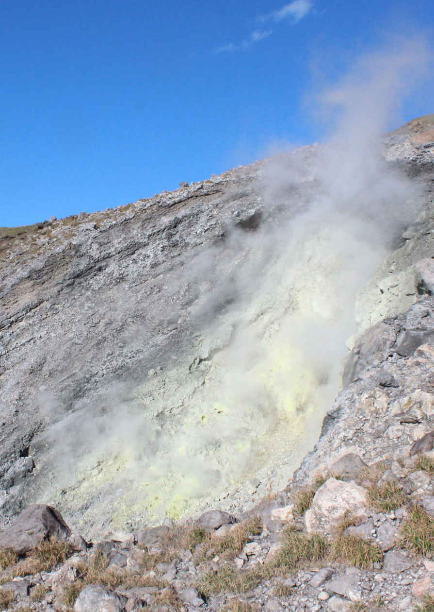
硫黄岳のふもとから歩いて十数分、海岸線の岩場で温泉が湧出しています。島の東側にあるので「東温泉」。自然発生的な露天風呂で、旅行者も自由に入ることができます。もちろん無料。脱衣スペースらしき石組みがつくられているだけで、お手洗いその他、人工的な施設はいっさいありません。
港近くの黄色い海水と同じ原因ですが、黄色い温泉水が岩を染めています。その周辺は火山のマグマに由来する溶岩やスコリアがつくりだすダイナミックな風景。鬼界カルデラの島に存在する、なんとも壮大で、不思議な色彩にあふれた露天風呂です。
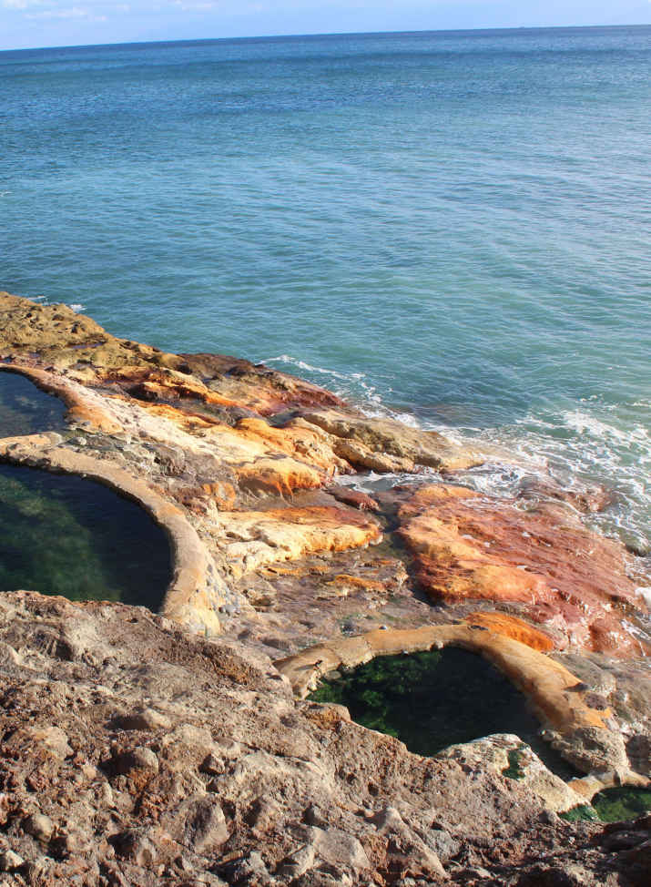
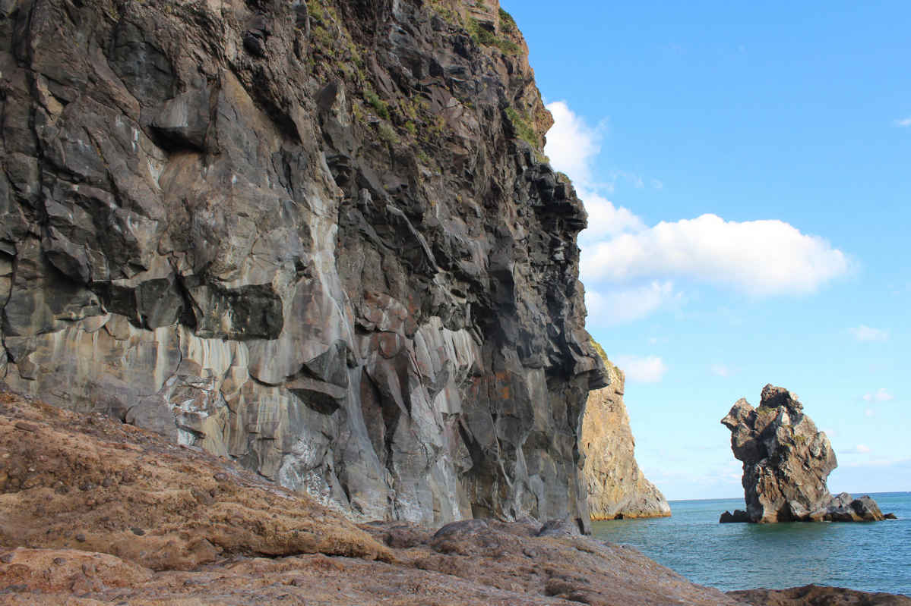
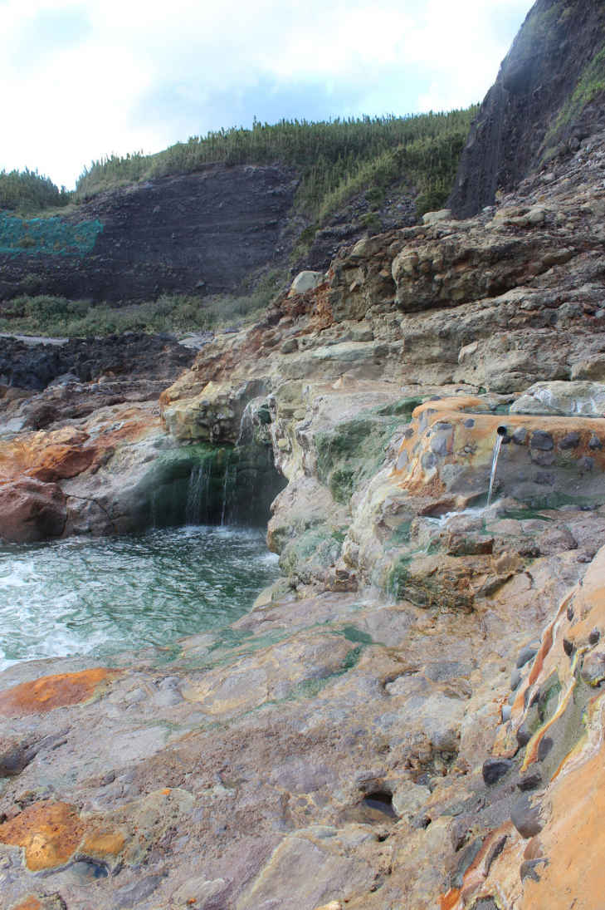
最後の写真は火山とは無関係ですが、硫黄島で見た夜明けの海。あわただしいスケジュールの取材旅行でしたが、この瞬間だけは、原稿の締め切りなんかどうでもいいや！ と大きな気分にひたりました。永遠の時間を感じさせてくれる荘厳な風景です。
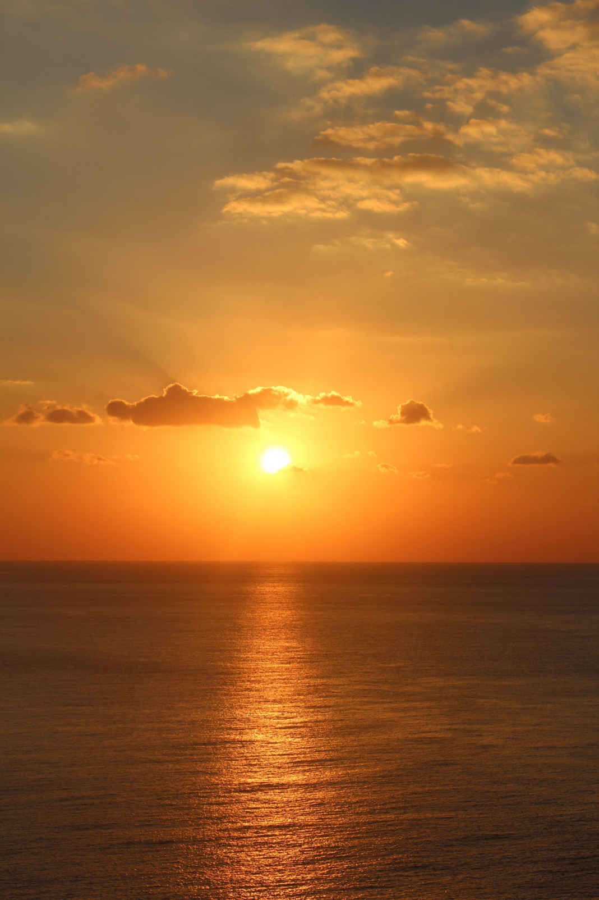
鬼界カルデラ・硫黄島 旅のメモ
●宿泊・店舗
おしゃれな南国風のホテル、カフェは論外として、コンビニ、スーパーなどの小売店、食堂は一軒もありません。酒類、菓子類などで禁断症状をおこす可能性のある方は、滞在期間中の必要量を持ち込まれることをお勧めします。
宿泊施設は民宿だけ。三島村のウェブサイトに連絡先が載っています。
http://mishimamura.com/tourism/468/
●移動手段
島内にバス、タクシーはありませんが、小さな島なので主要な観光スポットには歩いていけます。レンタカーを借りることのできる民宿は限られているので、必要な方は電話で確認を。
●温泉
記事中で紹介した東温泉のほか、海岸にある天然の温泉場が数か所あります。村営施設の三島開発総合センターにも温泉浴場があります。無料。
●名物
鬼界カルデラの硫黄島、竹島は、「大名筍」と呼ばれる細身のタケノコの産地としても知られています。あく抜きをせず、生で食べることができると評判。
●データ
宿泊施設、フェリーの運行スケジュール、ジオパーク関係の情報は三島村のウェブサイトで。
霧島・高千穂峰
巨大な火山噴火に遭遇した縄文時代の人びとの、驚きや畏怖の感情が古事記神話に痕跡を残しているのだとしたら──。『火山で読み解く古事記の謎』の冒頭にこう書いた根拠のひとつは、天孫降臨の山、高千穂峰が縄文時代に誕生した火山であることです。
古事記、日本書紀によると、アマテラスの命をうけたニニギノミコトは九州にある高千穂という山に降り立ち、そこから天皇家の歴史がはじまることになっています。歴史的な事実というより物語性の強い神話なのですが、霧島山系の高千穂峰が、天孫降臨神話の伝承地として古来、議論の対象となっています。
標高一五七四メートルで、霧島連山の第二峰。高千穂峰は、縄文時代の前半期にあたる一万年ほどまえの噴火とともに形成がはじまります。自らの溶岩や火砕流によって次第に大きな山に成長し、現在、私たちが目にする高千穂峰が完成しました。
富士山と同じく、いわゆる成層火山です。縄文時代に生じた最後の噴火によって、火口を塞いだ溶岩が小丘状の塊（溶岩ドーム）となったあと、噴火をしないまま今日に至っています。
『火山で読み解く古事記の謎』では、縄文時代に出現したこの天孫降臨の山にスポットライトをあてて、サルタヒコ、アメノウズメ、ヤマトタケルの神話とのかかわりについても考えています。
高千穂峰の山頂部は鹿児島と宮崎の県境で、どちらからでも行けますが、火山的な風景がお目当てであれば鹿児島県側ということになります。
高千穂峰は江戸時代までは山岳信仰の聖地であり、現在も霧島神宮（鹿児島県霧島市）、霧島東神社（宮崎県高原町）の神域です。はじめての登山のまえには参拝するのが礼儀だと聞き、まずは霧島神宮に行きました。
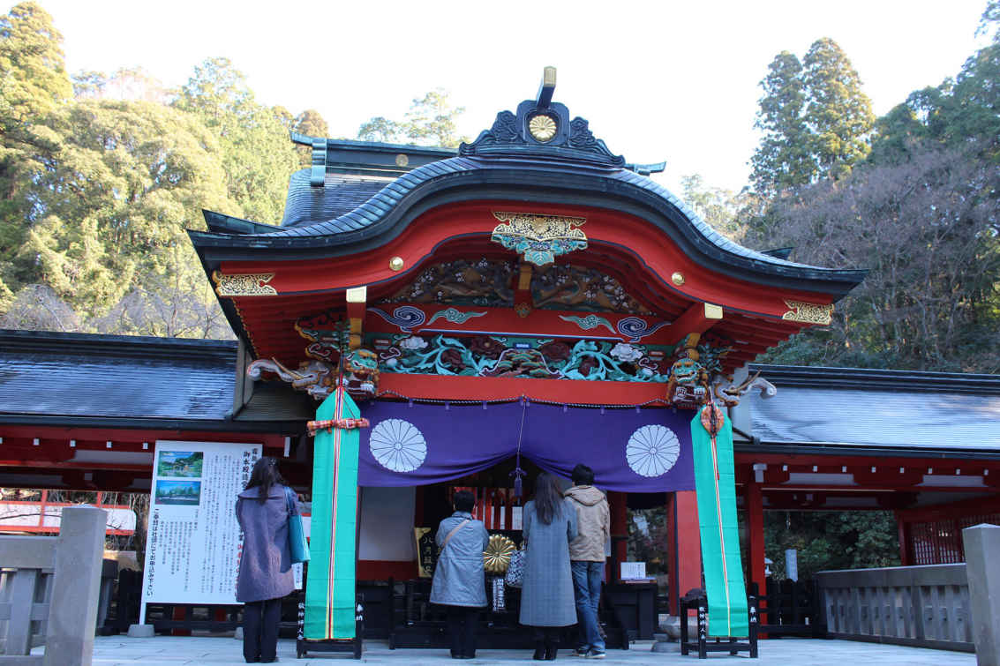
霧島神宮から「高千穂河原」の登山口までの直行バスはありません。景色も良いし、歩いて行けない距離ではありませんが、二時間以上かかるそうです。先を急ぐ取材旅行でしたから、ささやかなぜいたくとしてタクシーを利用しました。時間は十五分ちょっと、料金は三千円程度でした。
登山コースの登り口で、霧島神宮の祭祀場を見ました。火山の鎮静を祈りつづけた歴史がしのばれます。
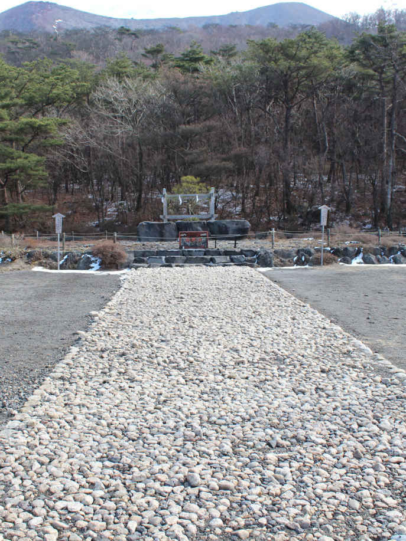
登山口に高千穂河原ビジターセンターがあって、ミニ資料館としても機能しています。私はそこに事前に電話して、「所要時間は一時間半から二時間くらいで中級レベル」と聞いていたので、甘くみてしまったのですが、登りはじめてすぐに、これはマズいと思いました。
噴火に由来する小石と砂と火山灰が積もった登山コースは、かなりの急斜面で滑りやすいことこの上なく、十歩進んでも三歩分くらいズルズルと後退してしまうのです。まさにアリ地獄状態。ほとんどの人が登山靴に登山用のステッキを持っていましたが、私はスニーカーでした。短時間の登山コースですが、登山靴は必須です。
砂と火山灰のあとは、溶岩の急斜面がつづきます。斜面は四五度よりも急であるように感じる箇所（あくまでも印象です）に突入してしまい、四つん這いの岩登り状態です。身の危険を感じ、写真撮影は断念。
山登りが精一杯で撮影どころではなくなり、よい写真が撮れていないのですが、次の写真は滑りやすい道から急勾配の溶岩に差しかかるあたりだったとおもいます。
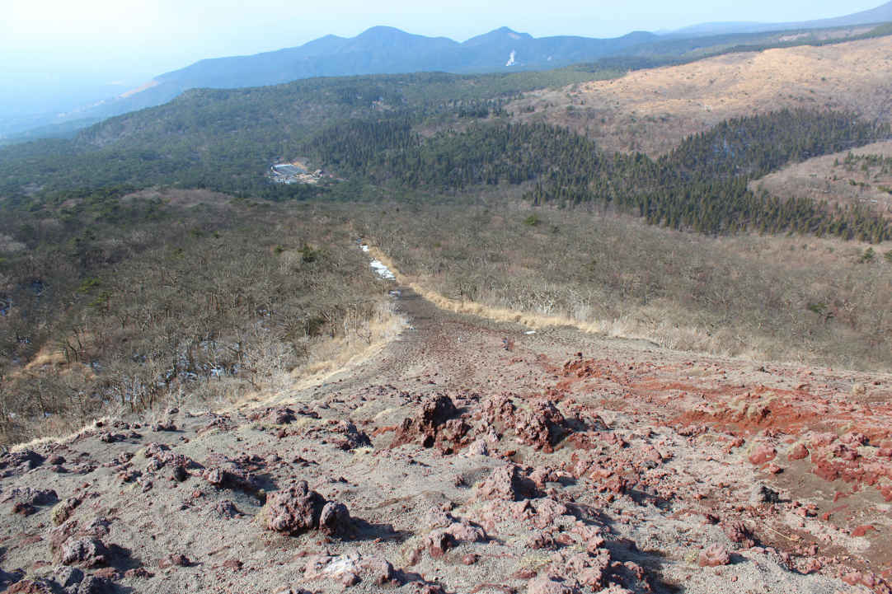
急勾配を登りきると次は、大正時代にも噴火している御鉢火口（次の写真、右側の斜面）を半周するようなかたちで、高千穂峰の頂上（次の写真、上部）を目指します。植物、虫の気配さえほとんどない荒涼たる風景がつづきます。二枚目の写真は御鉢火口の内部です。
御鉢火口をめぐり終えると、もう一度、下り道。鳥居が写っている三枚目の写真は、高千穂峰の頂上まであと一息という地点です。
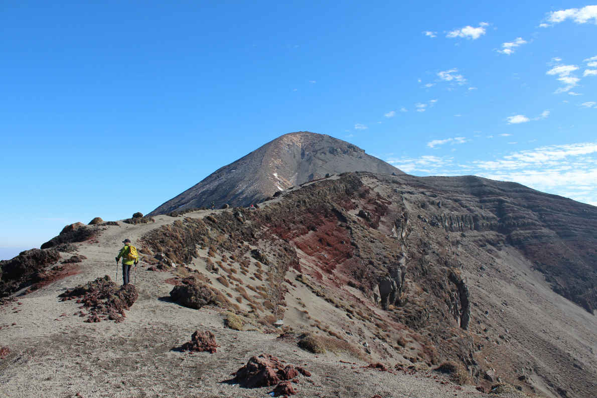
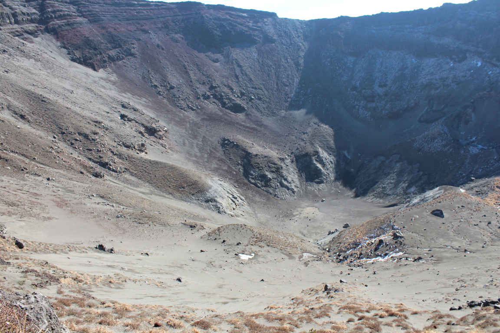
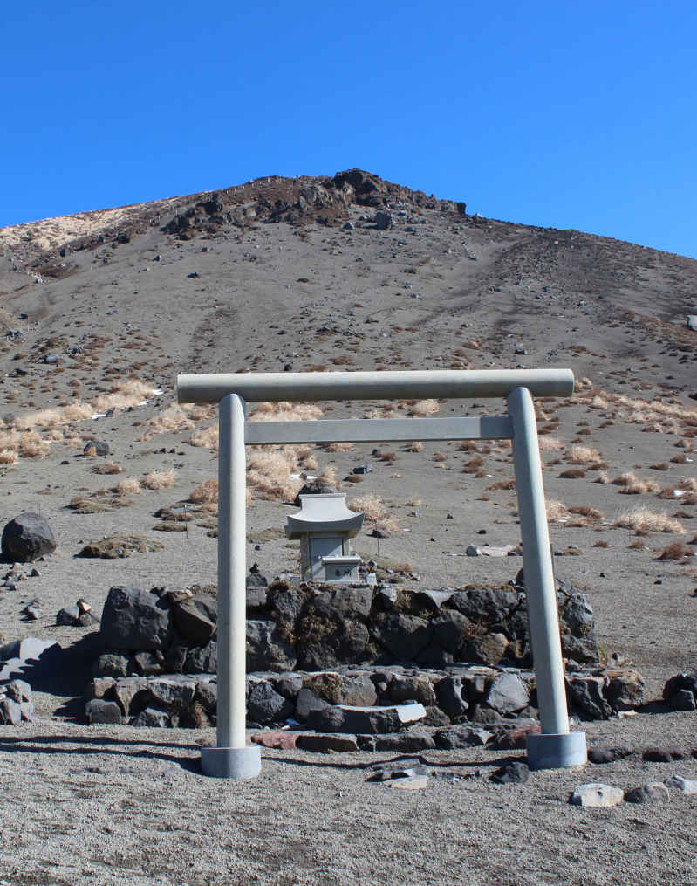
高千穂峰は正真正銘の火山ですが、頂上に火口はありません。溶岩が火口をふさいで、まるい丘のようになっているからです。いわゆる「溶岩ドーム」。そこに銅剣が突き刺されており、「天の逆鉾」の名で知られています。誰が、いつ、何の目的でこんなことをしたのか──。まったくわからない謎の剣です。
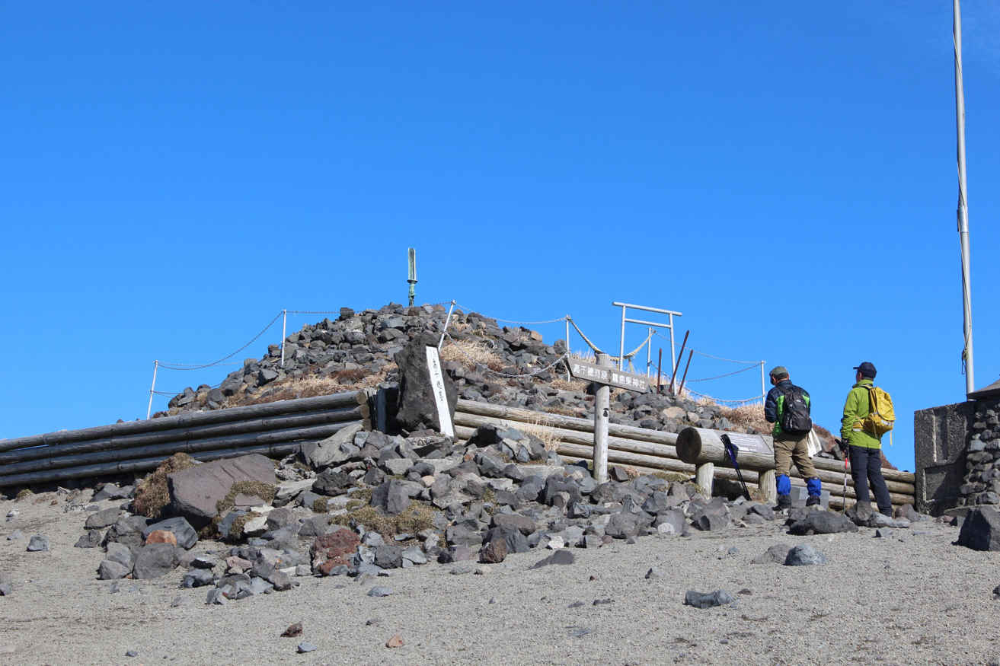
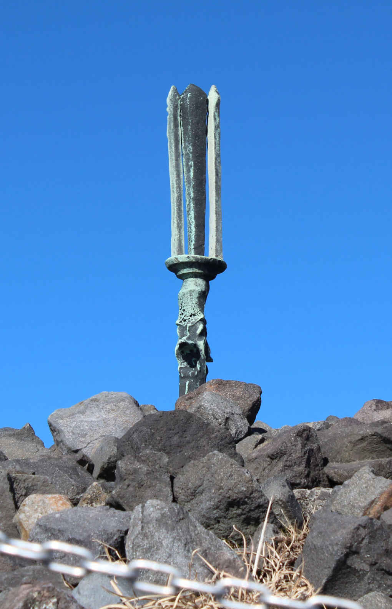
古事記を読んでみると、スサノオ、イザナミなど有名な神々がウンコをする場面があるのですが、もし、そうした神々が火山のメタファーであるなら、神さまのウンコとは溶岩あるいは火砕流ということになり、火山の火口は神さまのお尻だという話になります。
九州南部は天孫降臨の神話で有名ですが、実はヤマトタケルの物語で再び舞台とされています。古事記には、九州の蛮族の王クマソタケルがヤマトケルに征伐されるとき、尻から剣を刺し通された状態で、長い問答を重ね、そのあと殺されるという奇妙な場面があります。火山の火口が神さまのお尻であるならば、クマソタケルは火山の神であり、高千穂峰の頂上の謎の剣は──。火山の風景のなかで気ままに広げた連想を、『火山で読み解く古事記の謎』にしるしています。
高千穂峰は生命の気配のない不毛の世界ですが、頂上からの風景は、三六〇度の雲の海。その美しさは「神」レベルでした。
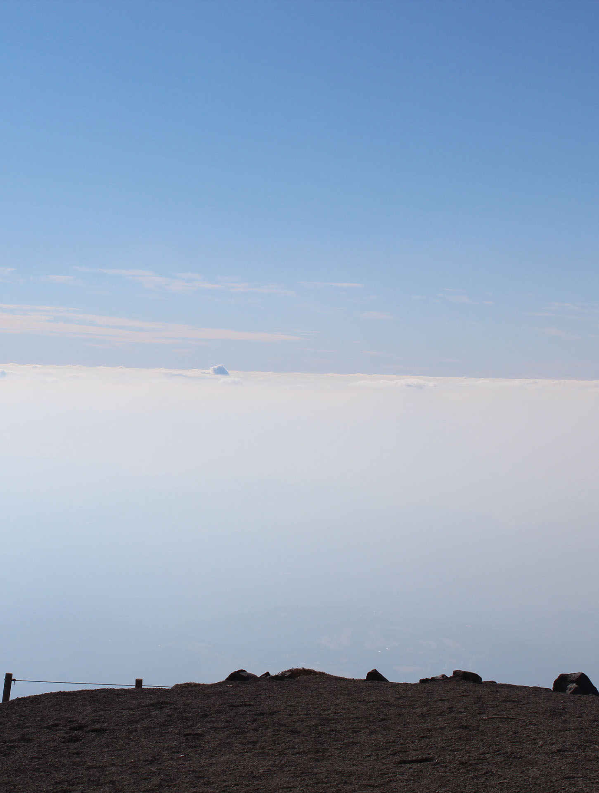
鹿児島、宮崎の県境は高千穂峰の山頂部にあり、宮崎県側に下ったところに、火山の火口に水がたまって池となっている「御 池 」があります。縄文時代にあたる五千年ほどまえの噴火に由来する火口湖です。ここでも、縄文時代に繰り返された激しい火山活動の一端を知ることができます。
私の場合、別の日に宮崎県側の霧島エリアをまわったのですが、鹿児島県側とはまた違った魅力を感じました。
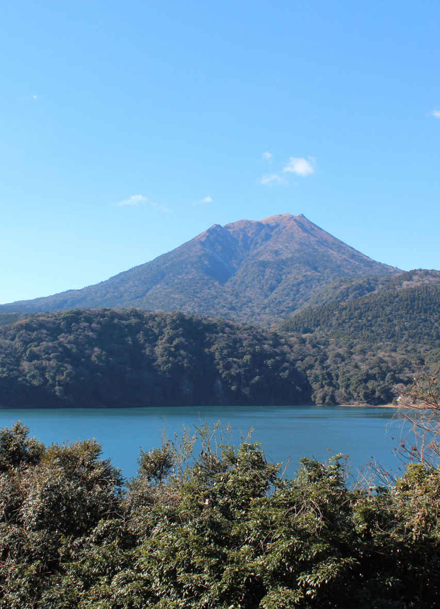
江戸時代までの霧島は修験道の盛んな土地でした。火山活動に由来する峨々たる山並は修験者の行き交う修行の場であり、霧島神宮をはじめとする当地の神社の多くは神仏混淆の修験道場でもあったと伝わっています。現在の霧島神宮（鹿児島県霧島市）に修験道、仏教の痕跡はほとんど見えませんが、宮崎県側の神社をめぐると、修験道の残滓ともおもえる民間信仰の気配が濃厚です。
次の写真は東 霧 島 神社（宮崎県都城市）。鬼が造ったと伝わる見事な石の階段があり、霧島修験の開祖と伝わる平安時代の性空上人にまつわる伝承も語られている神社です。
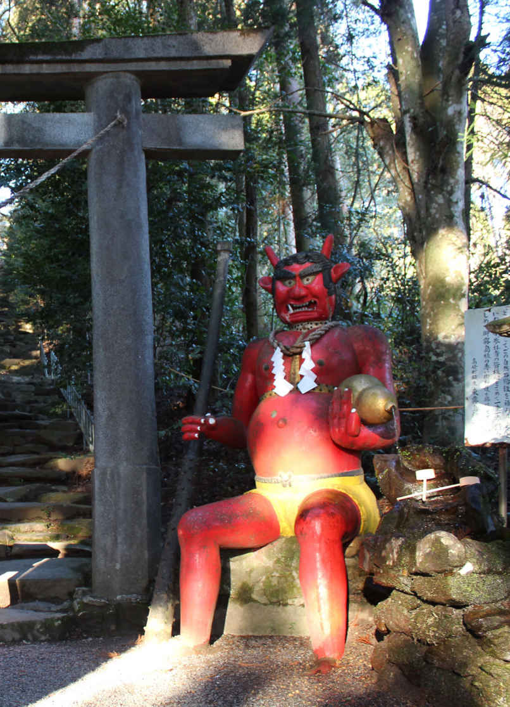
霧島火山群は、鹿児島、宮崎の両県にまたがる三〇×二〇キロメートルの楕円形のなかに二十以上の火山が集積しています。火山列島である日本のなかでも、有数の火山エリアです。その全体像を知るには乗用車での周遊が最適なのでしょうが、時間に余裕のある場合は、ＪＲの日豊線、吉都線、肥薩線を乗り継いで、霧島エリアをグルッと一周することもできます。
私の場合、鹿児島市に拠点を置いての取材旅行の一日をあてて、前の写真の東霧島神社、高原町にある神武天皇の伝説スポットなどをめぐるとき、ＪＲを利用しました。スケールの大きな火山的な風景が連作のパノラマ写真のように車窓に映し出され、時間が経つのを忘れてしまいます。ただし、電車の乗り継ぎでは二時間待ちというケースも。カップルや家族での旅行では不幸な結果を招きかねないので、一人旅向きのコースであることを申し添えておきます。
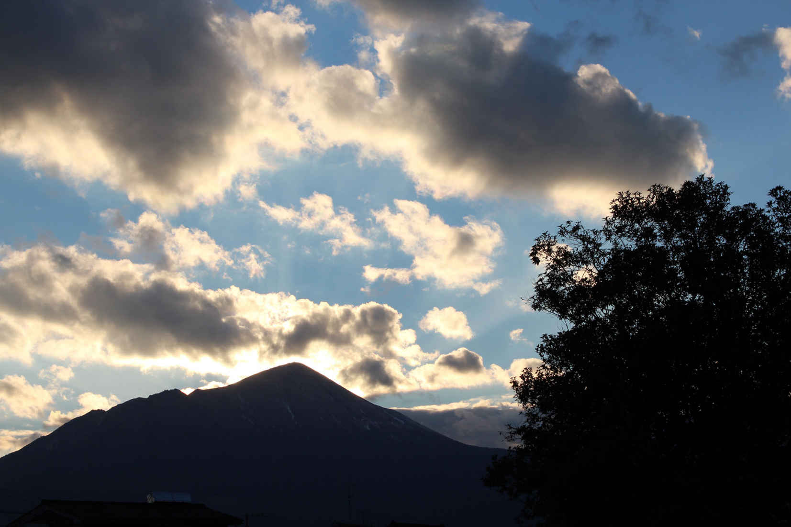
◎霧島・高千穂峰 旅のメモ
●交通
高千穂河原（登山口）： バスを乗り継いで行けますが、鹿児島中央駅、鹿児島空港からの直行便がないので、高千穂河原ビジターセンター（http://www4.synapse.ne.jp/visitor/ ）、霧島市観光協会（http://kirishimakankou.com/ ）など関係機関に問い合わせることをお勧めします。
霧島神宮： ＪＲ国分駅から直行バスがあります。鹿児島空港からは途中で乗換えが必要です。詳しくは霧島神宮のウェブサイト（http://www.kirishimajingu.or.jp/contents/goriyou_airport.html ）をご覧ください。
ＪＲ霧島神宮駅からは少し離れているので、バスかタクシーの利用となります。
●宿泊
霧島エリアは温泉と高原観光の一大リゾート地なので、ホテル、旅館、ペンションなどあらゆる形態の宿泊施設があります。
私の場合、取材旅行だったので、鹿児島市内のビジネスホテルを拠点にしていました。中心街の天文館近くのホテルであれば、県立図書館、ジュンク堂書店で地元関連本を物色し、全国的な注目を集めつつある鹿児島ラーメンを食べ歩くこともできます。
●温泉
まさに火山の恵みですが、鹿児島県には温泉旅館だけではなく、銭湯感覚の手軽な温泉がたくさんあります。私の場合、バスや鉄道の乗り継ぎにともなう待ち時間を温泉銭湯でつぶしました。いつ、どこで、いい感じの温泉銭湯に遭遇するかわからないので、タオル持参の観光をお勧めします。鹿児島市の中心街、天文館近くにも温泉銭湯があるのは驚き。
●データ
霧島火山群についての情報は、霧島ジオパークのウェブサイトで紹介されています。
出雲編
文春新書『火山で読み解く古事記の謎』の冒頭で書いたことですが、古事記における大きな謎は、九州南部と出雲の二か所が、神話の舞台としてくりかえし登場することです。その謎をとく鍵は、九州南部と出雲が日本列島で有数の火山エリアであるというシンプルな事実から見出されるのではないかとおもいます。
ここでいう「出雲」は、出雲大社の鎮座する島根県出雲市エリアだけではなく、隠岐の島をふくむ島根県、鳥取県に相当する広義の出雲。古事記や風土記にしるされた出雲神話の舞台であり、史実と幻想の入りまじる「古代出雲王国」のイメージです。
一般常識のうえでいえば、島根県、鳥取県に火山国のイメージはないとおもうのですが、実は九州を除く西日本では最も火山の多いところです。国立天文台が毎年刊行する『理科年表』によると、いわゆる休火山、死火山もふくめて二百六十八か所の火山が日本列島にあり、そのうち、島根県には三 瓶 山など七か所、鳥取県には出雲富士の異名をもつ大山など四か所の火山があります。
『火山で読み解く古事記の謎』では、スサノオ、オオクニヌシなど出雲系の神々を火山の神とみたうえで、国譲りの神話を大地鎮静の祈りの記憶として解釈しています。取材をとおして、いくつかの出雲の火山を目にしました。文春新書では掲載できなかった写真をふくめて紹介しましょう。
三瓶山、石見銀山、大根島
島根県、鳥取県の十ヶ所の火山のうち、気象庁によって活火山に選定されているのは三瓶山（島根県大田市、飯南町）だけですが、穏やかで明るい風景の広がる三瓶山（次の写真） を、火山とはおもっていない地元の人も多いという話を聞きます。
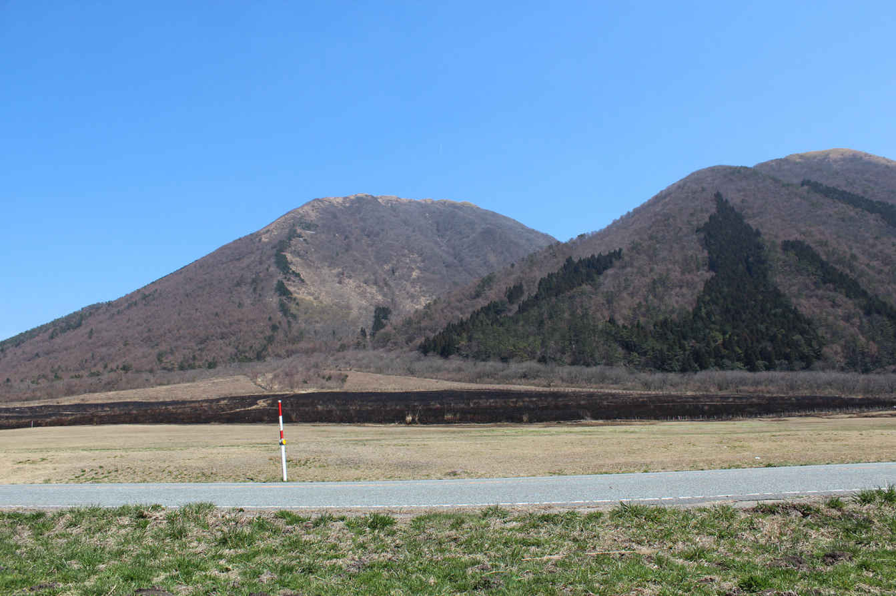
この火山は、十万年まえから縄文時代まで激しい活動をつづけたあと、弥生時代から現在に至るまで鳴りを潜めているからです。
現在の基準では、過去一万年間の火山活動の有無によって、活火山かそうではないかが決められています。
三瓶山のふもとに、三瓶自然館サヒメルという島根県立の博物館があって、火山としての三瓶山についても詳しく解説されています。そこから北西三キロメートル、火山噴火による火砕流や土石流によって生き埋めにされた杉の木が発見され、「小豆原埋没林公園」として保存されています（写真は、しまね自然と環境財団提供）。
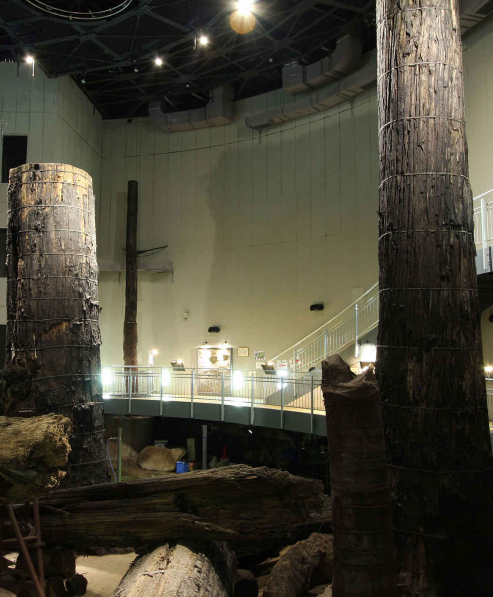
杉の木を埋めたのは、四千年まえ、縄文時代の巨大噴火でした。この噴火以降、大きな火山活動を休止していますが、地下で眠っていた「縄文杉」は、三瓶山がすさまじいエネルギーを秘めた火山であることを証言しています。
スサノオとヤマタノオロチの戦いは出雲神話の名場面ですが、ヤマタノオロチとは、火山の溶岩あるいは火砕流を神話化したものだとする説があります。天孫降臨と高千穂峰のケースのように、神話と特定の火山がぴたりと結びついているわけではありませんが、三瓶山や大山の噴火を縄文時代の人たちが目撃していることは確かです。
三瓶山のほか、島根県の火山のリストには、大江高山、横田火山群、青野山火山群、野呂、大根島、隠岐の島があげられています。
隠岐の島をのぞけば、他県からの観光客が、火山的な風景美を目的として訪れる場所ではないとおもいますが、意識しないで、大江高山の火山群を訪れた人はいるはずです。大江高山は二百万年まえから九十万年まえにかけて活動していた火山群ですが、その活動によって石見銀山（島根県大田市）の鉱床を生み出しているからです。
石見銀山は世界遺産に登録され、町並みの景観の魅力もあって人気のある観光地となっています。石見銀山の観光は、大江高山の火山への旅でもあるのです。かつての坑道を見学できるコースも整備されていますが、そこが太古に激しく活動した火山であることを知っていれば、また違った感慨があるはずです。
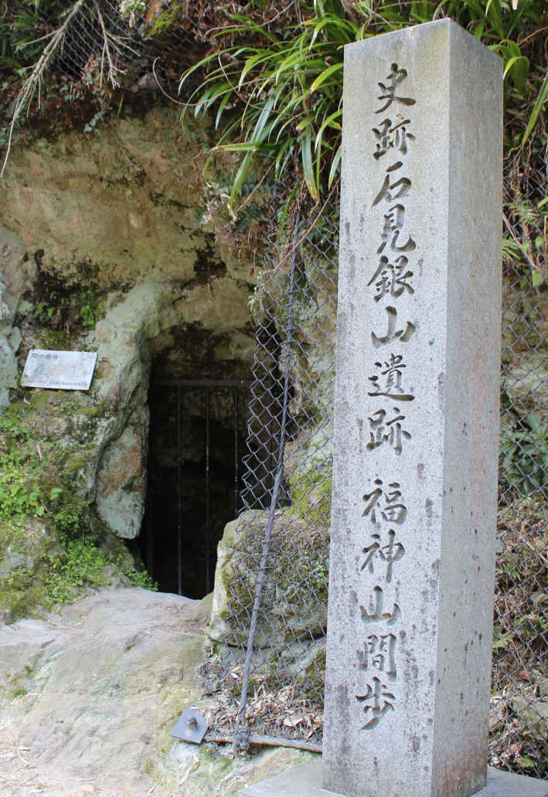
松江市は、松江城とその周囲の風雅な町並み、小泉八雲ゆかりの地など見所の多い観光地ですが、市内に火山があることをご存じでしょうか。
市の中心部から車で三十分ほど。宍道湖の東側の中海に浮かぶ大根島は小さな火山島です。二十万年ほどまえの噴火によってできた島だと考えられています。粘着力に乏しい、流れやすいタイプの溶岩なので、火山といっても高さは四二メートル。火山らしくない火山です。
大根島は現在、道路でつながっています。私は地元の人の案内で、車で島を一周しただけですが、溶岩をいかした公園など火山島らしいスポットもあります。次の写真では、湖の真ん中に見える、横長の平べったい小さな島が大根島です。
わざわざ足を運ばなくても、電車、バスなどによる移動中、視界に入ることもあるので、出雲へお出かけの際は探してみてください。
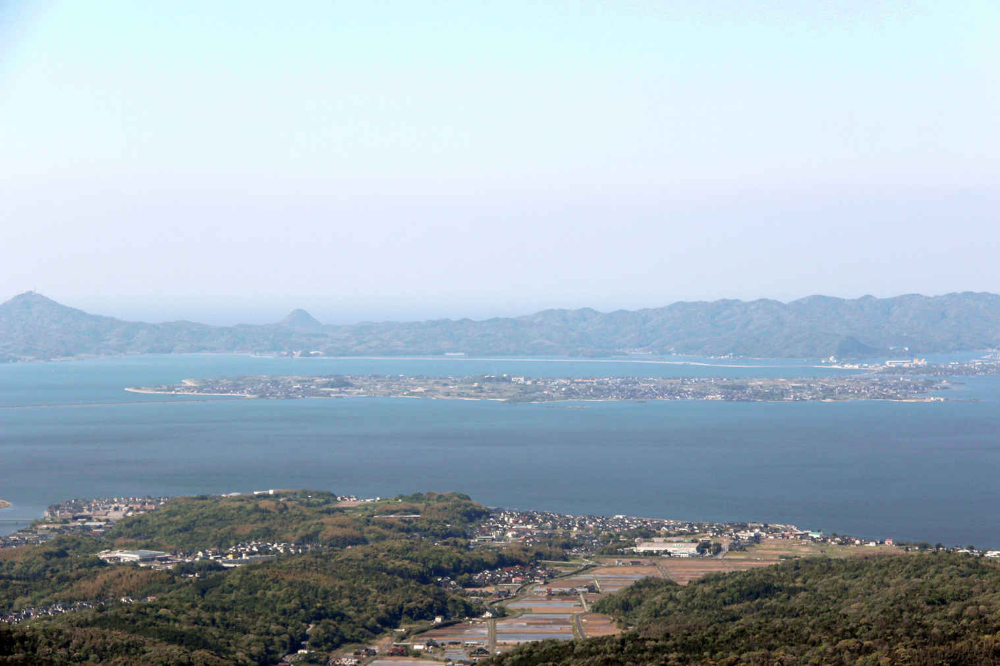
隠岐諸島
隠岐の島。日本海に浮かぶ美しい島々は古事記神話の舞台としても有名です。オオクニヌシの物語に登場する因幡の素 兎 は、この隠岐の島に住んでいたと信じられています。
隠岐の島における火山活動の歴史は、縄文時代、旧石器時代よりはるかに遠い何百万年まえの過去にさかのぼります。隠岐の島には、躍動感のある火山的な造形が残されており、観光名所となっています。
次に紹介する写真は、隠岐諸島のうち、本土に近い島前エリアのひとつ西ノ島の国賀海岸。太古の火山活動による溶岩や火砕流が何層にも重なり、それが波によって浸食された景観です。
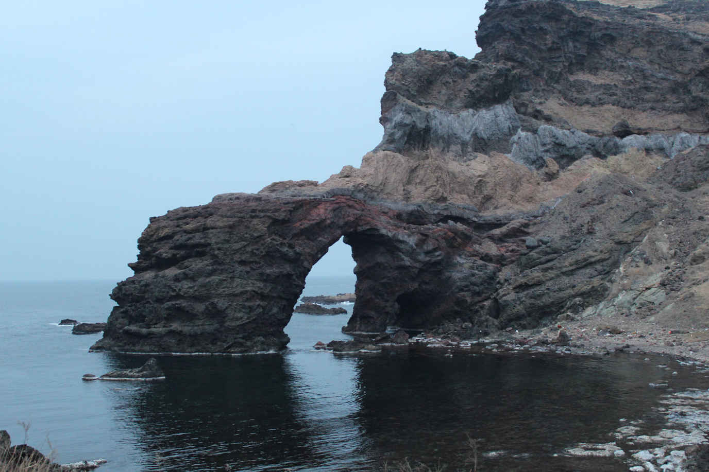
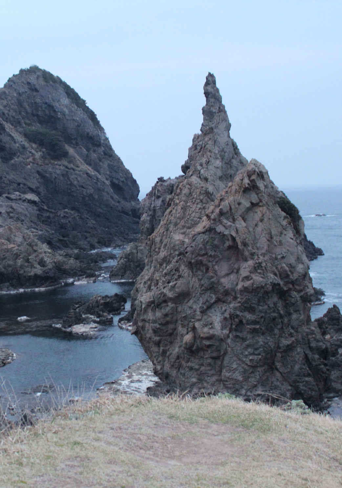
西ノ島の焼 火 山 は、太古の火山活動の中心地で、山の頂には噴火のときに放出されたマグマが火砕流となり、冷え固まった巨大な岩体が残っています。
そこに焼火神社という古社が鎮座しているのですが、自然発生した穴にはめ込むという面白い趣向で、神殿が設けられています。
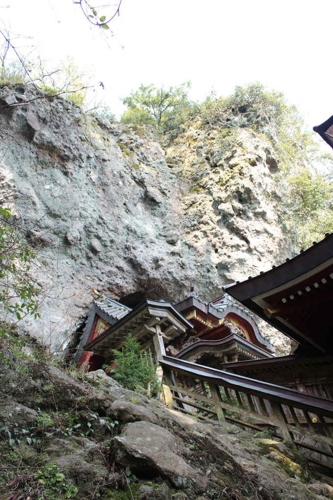
国譲り神話の風景
出雲編の最後に、「国譲り」の舞台を紹介します。古事記神話というより、それを踏まえた後世の伝承ということになりますが、出雲の王者オオクニヌシとアマテラスの使者タケミカヅチが「国譲り」の交渉をした現場は、出雲大社から歩いて二十分ほどのところにある稲佐の浜だという話になっています。
縄文時代にまで視界を広げると、出雲が火山の王国であったことをご理解いただけたとおもいます。『火山で読み解く古事記の謎』では、国譲り神話を出雲の火山を鎮めようとした人たちの祈りの歴史として読み解いてみました。
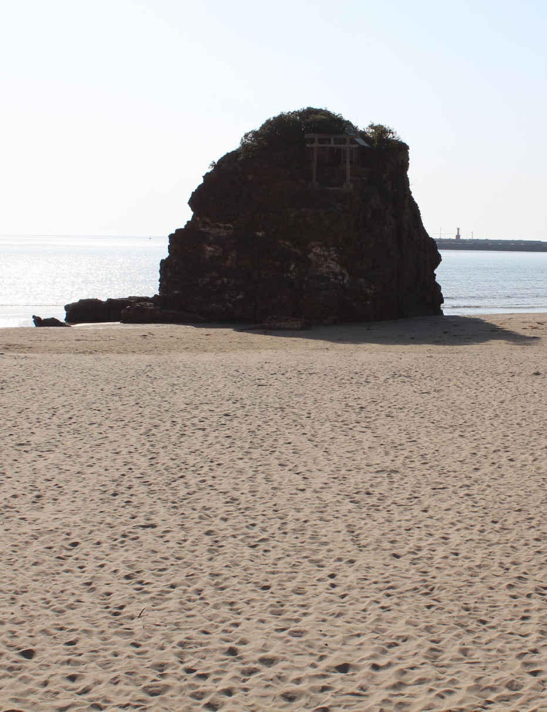
次の写真は稲佐の浜のすこし北側で撮影した海の風景。島根県にはいくつもの「夕日スポット」があり、神話の舞台と重なっています。美しい風景に神々の気配を感じることにおいては、古代の人たちも私たちも同じなのかもしれません。
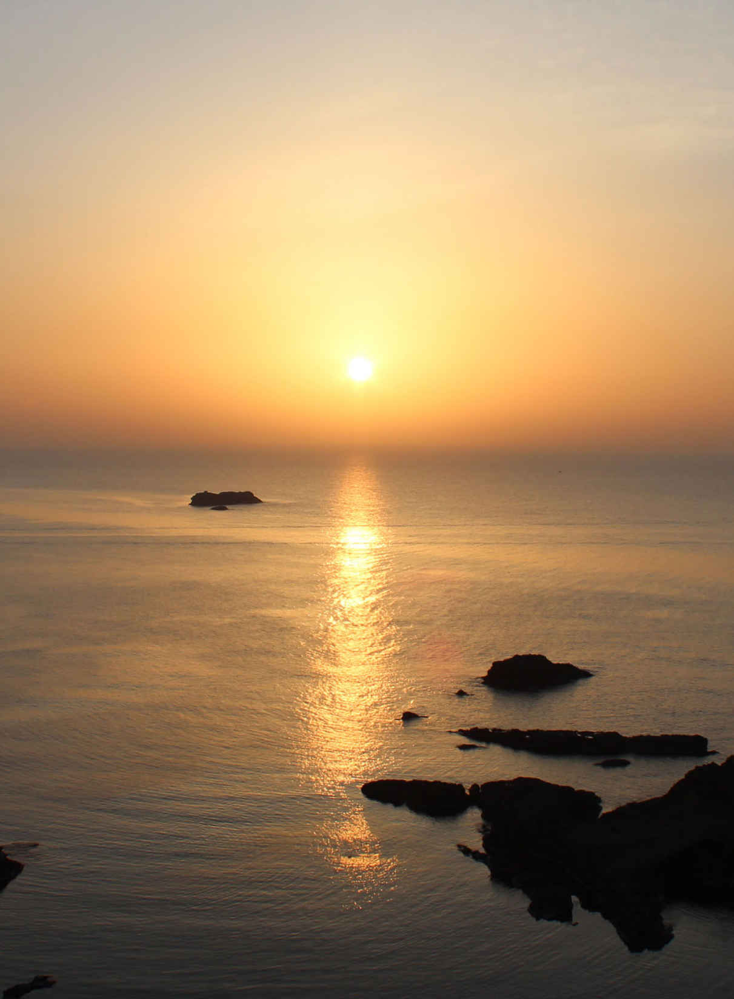
◎出雲編 旅のメモ
●交通
三瓶山： ＪＲ大田市駅から、三瓶自然館、埋没林公園に行けるバスが出ていますが、本数が少ないので要注意。
石見銀山： ＪＲ大田市駅が最寄りですが、ＪＲ松江駅、ＪＲ出雲市駅などからもバスが出ています。
隠岐の島： 島前の西ノ島まで七類港（松江市）からフェリーで二時間半程度。
●宿泊
島根県は観光地なので、格式ある旅館をふくめてさまざまなタイプの宿泊施設があります。大型のビジネスホテルは松江駅周辺に集まっています。松江市立中央図書館は松江駅から徒歩十数分。
●温泉
島根県は県内各地で温泉がわいており、火山の気配を感じることができます。出雲国風土記に「神の湯」と紹介された玉造温泉（松江市）は風情ある温泉街ですが、公的な日帰り温泉施設もできています。
●データ
隠岐ジオパークについては、公式サイトで詳細を知ることができます。
熊野編
九州南部の火山群が活火山の典型であるとすれば、出雲エリアの火山群には休火山、死火山としての特徴があります。熊野の火山は千五百万年まえに激しく活動したあと、沈黙をつづけ、風化作用によってその姿さえ消滅しています。もはや死火山とさえいえない火山の化石。しかし、太古の火山活動に由来する景観は、古くから熊野信仰の聖地であり、現在は世界遺産の観光地となっています。
千五百万年まえの巨大噴火で生じた熊野カルデラの大きさは四〇×二〇キロメートル。阿蘇のカルデラ（二五×一八キロメートル）をはるかに上回る規模で、日本列島の歴史において最大の噴火だったという議論もあるほどです。
古事記神話において、熊野および紀伊半島は九州南部、出雲に次ぐ重要な舞台となっています。神武天皇の東征の物語では、熊野で上陸した軍団が、妖しげな「熊」のかたちのモンスターによって失神させられます。オオクニヌシの冒険は、出雲と紀伊半島を往復しながら物語が進展します。
熊野三社
『火山で読み解く古事記の謎』では、熊野を舞台とする古事記神話や熊野信仰の歴史が、その火山的な風土と結びついている可能性について考えています。熊野本宮大社、熊野那智大社、熊野速玉大社。熊野三社と称される熊野信仰の中核エリアは、熊野カルデラと重なっているからです。
熊野那智大社には、ご神体でもある有名な「那智の滝」があります。滝の背景をなす岩は、垂直に一三三メートルの高さで切り立って断崖絶壁をなし、何本もの石の柱が並んでいるように見えます。いわゆる「柱状節理」。火山の風景を代表する自然の造形です。
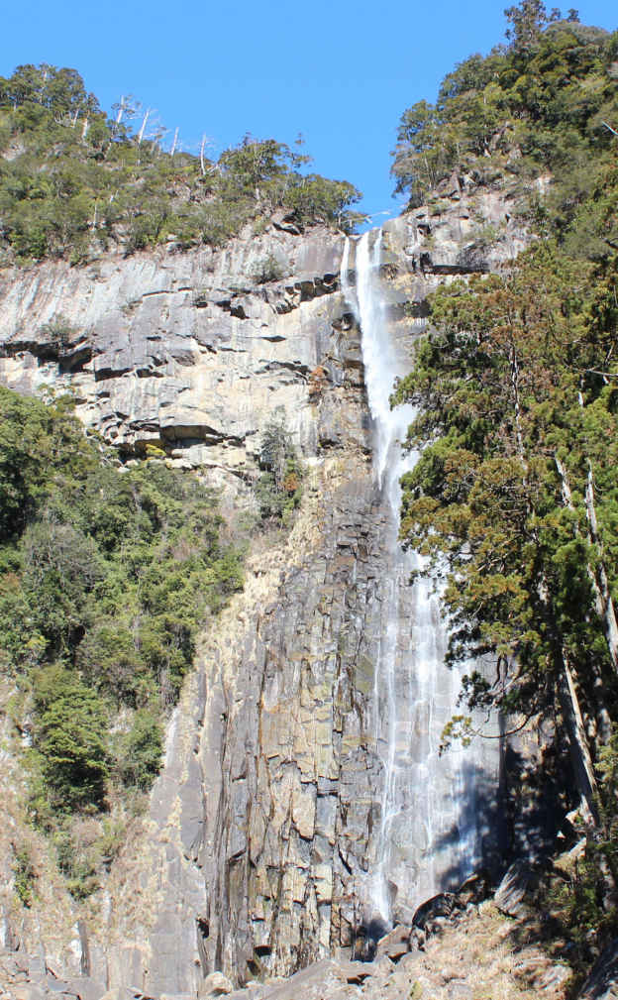
滝の背面をなす絶壁は、花崗斑岩と分類され、火山の地下にたくわえられたマグマが冷え固まった巨岩です。冷却するときの収縮でタテに柱状の筋目ができます。
新宮市の神倉神社は熊野三社のひとつ熊野速玉大社の摂社で、古事記にしるされた神武天皇の物語にまつわる伝承があります。
一〇〇メートルちょっとの小高い山につづく石段を登りきると、その頂きにバスが空間に浮かんでいるように見える巨岩があります。ゴドビキ岩と呼ばれるこの巨岩は、神倉神社の祭祀の対象です。那智の滝と同じく、火山のマグマが冷えてできた花崗斑岩です。
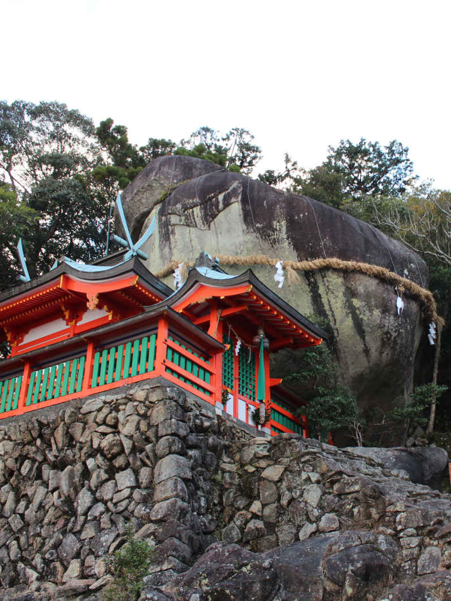
ゴドビキ岩の下は次の写真のような参道になっています。長い石段を登ってきた人は、火山の岩体の上にある参道を通って、巨岩を拝む場所へ進みます。
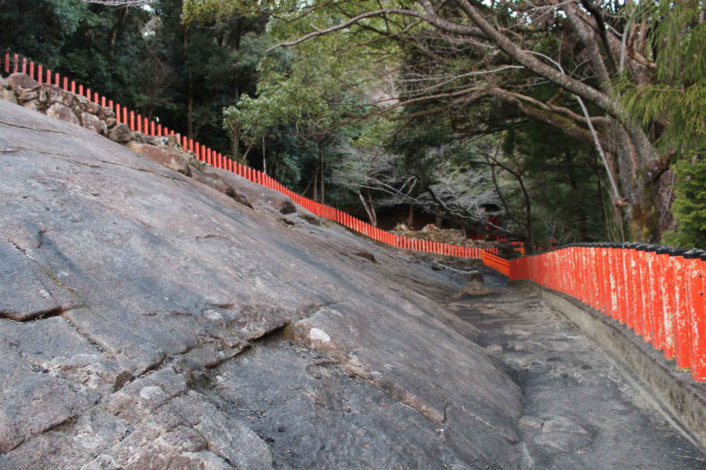
一枚だけ、拡大写真を紹介します。巨岩の足元にある岩の表面です。岩石に興味がない人にとっては何じゃこりゃ？ の写真かもしれませんが、花崗岩ならではのこのツブツブに「美」を感じる鉱物マニアもいるそうです。ツブツブは、マグマが地中で冷え固まるときにできた結晶。熊野の風景のなかでは、千五百万年まえの火山活動の記憶をとどめる岩が、信仰の歴史と重なり合っています。
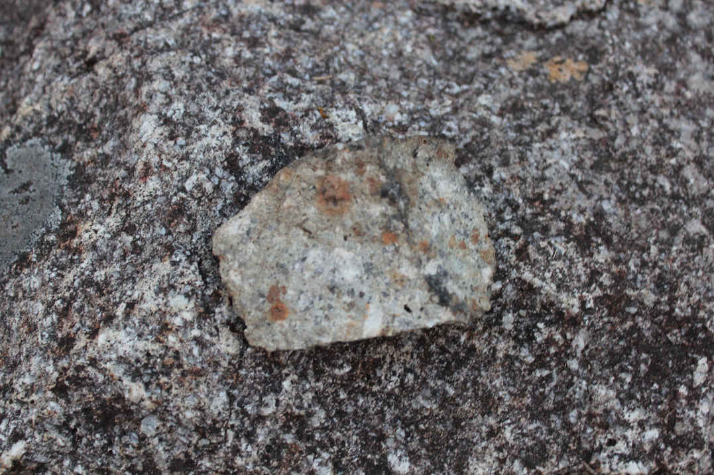
熊野本宮大社の近くには、湯の峰温泉、川湯温泉、渡瀬温泉と三つの温泉があり、本宮温泉郷ともいわれています。湯の峰温泉には、中世の説経節で有名な小栗判官の伝説があります。敵によって殺されかけ、みにくい体になってしまいますが、熊野の温泉の霊威によって、もとの美丈夫によみがえります。
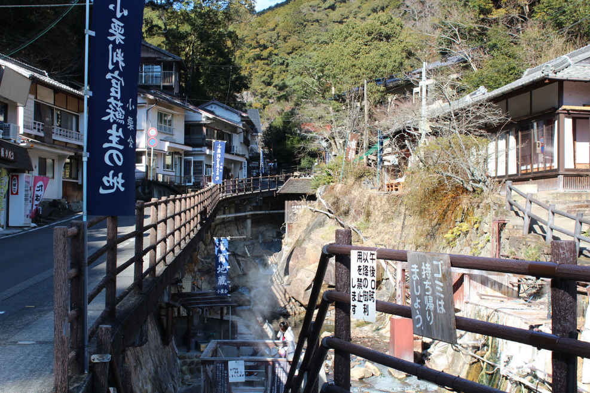
イザナミの墓標
古事記や日本書紀にしるされた国産み神話では、女神イザナミは日本列島の島々を産んだあと、風の神、木の神、山の神など森羅万象の神々を産んでゆきます。しかし、火の神カグツチを出産したときの火傷が原因となって絶命し、黄泉の国へと赴きます。
古事記はイザナミの墓所の所在地を出雲の比婆山としていますが、日本書紀の諸伝のひとつは、イザナミを「紀伊国の熊野の有馬村に葬りまつる」と記しています。
その伝承地とされる三重県熊野市の花 窟 神社。ＪＲ熊野市駅から歩いて十分くらいの行きやすい観光地ですが、その光景はこの世ならぬ不思議な気配を漂わせています。
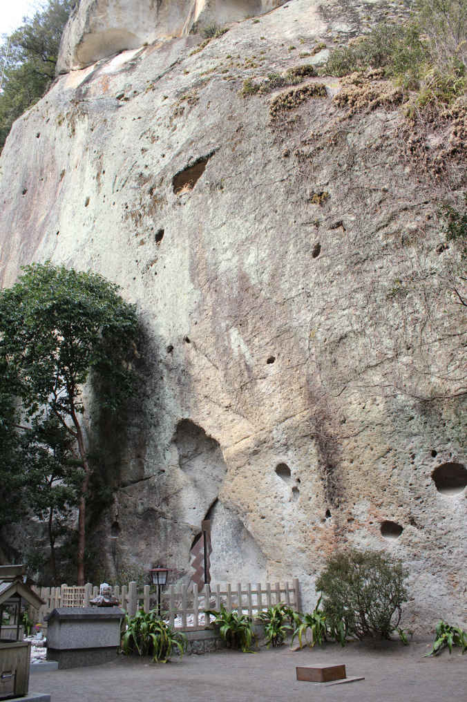
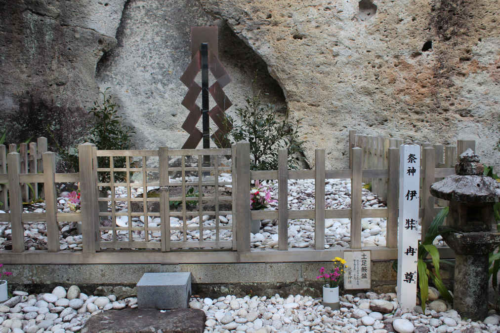
高さ五〇メートルに近い白っぽい巨岩が海岸線のすぐ近くに切り立っており、その足元にイザナミの墓所であることを示す標識があります。そのすぐ近くに、火の神カグツチの墓が同じようなつくりで設けられています。
この巨石は千五百万年まえ、熊野の火山が噴火し、マグマが火砕流となり固まったもの。流紋岩質火砕岩と呼ばれています。
ジオパークへの旅
熊野地方は、世界遺産の観光地として知られていますが、もうひとつのユネスコ事業である「ジオパーク」にも認定されています。ジオパークとは、地球科学、地質学のうえで価値のあるエリアを認定し、教育や観光に役立てようという世界的な取り組みですが、「南紀熊野ジオパーク」は、歴史的な記憶と風景が直結しており見応えがあります。
『火山で読み解く古事記の謎』では紹介していませんが、紀伊半島最南端の駅・ＪＲ串本駅から歩いて三十分くらいのところにも、千五百万年まえの巨大な火山活動に由来する不思議な景観があります。
ゴジラの背中にある突起物のような岩の連なりは、火山のマグマが大地の割れ目にそって固まった跡だと説明されています。現地にはジオパークのパネルや展示コーナーがあり、風景をまえに地質学的な歴史を学ぶことができます。
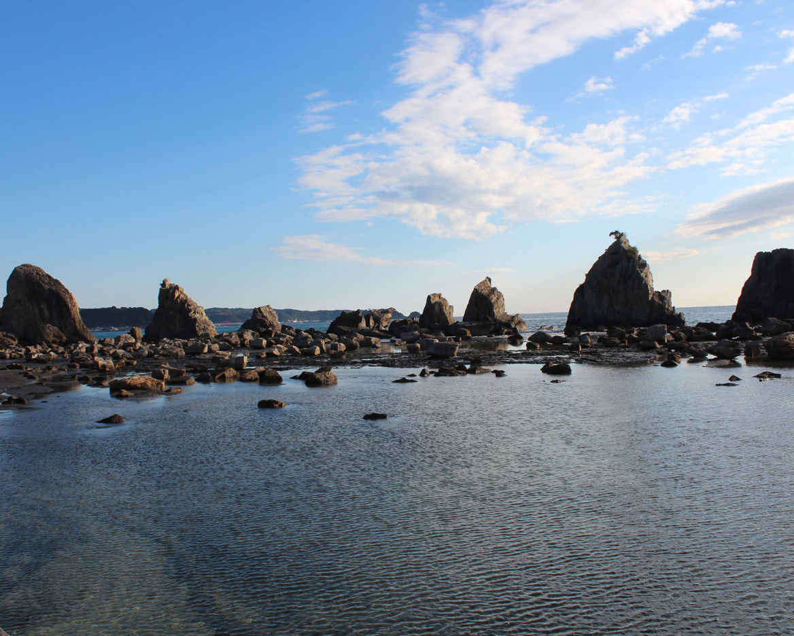
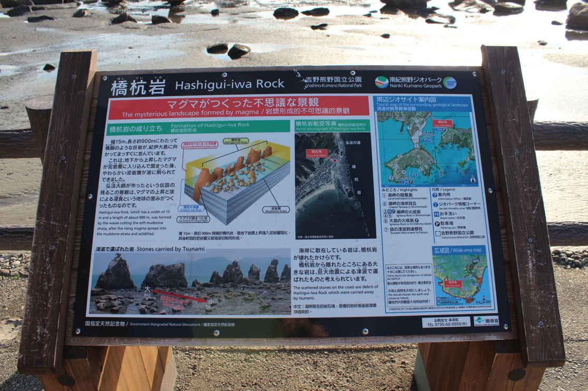
この電子書籍で紹介した鬼界カルデラ、霧島火山群、隠岐諸島もジオパークに認定されており、出雲エリアについても、早ければ二〇一七年秋から「くにびきジオパーク」として、神話の舞台と地質学・地球科学を結び付けるユニークな試みが始まろうとしています。
古事記神話をめぐる旅は、ジオパークへの旅とも重なっています。日本列島に暮らした人たちの精神の歴史が火山的な風土といかに深く結びついているか──。『火山で読み解く古事記の謎』が、それを考えていただくきっかけになることを願っています。
◎熊野編 旅のメモ
●交通
熊野本宮大社： ＪＲ新宮駅からバスで一時間半程度。
熊野那智大社： ＪＲ紀伊勝浦駅からバスで三十分程度。
熊野速玉大社： ＪＲ新宮駅から徒歩二十分。巨大な磐座の写真を紹介した摂社の神倉神社まではさらに徒歩二十分。
花 窟 神社： ＪＲ熊野市駅から徒歩十分。
●宿泊
熊野エリアも人気の高い観光地ですから、さまざまなタイプの宿泊施設がそろっています。交通の便を優先する場合は、新宮駅周辺のホテルが適しています。ただ、新宮市街地に温泉宿はないようです。新宮市立図書館は新宮駅から徒歩十分で、地元出身の作家、中上健次を記念する資料室があります。温泉と魚料理を優先するなら、勝浦での宿泊がお勧めです。
●温泉
熊野本宮大社近くの本宮温泉郷（湯の峰温泉、川湯温泉、渡瀬温泉）が有名ですが、熊野カルデラに沿うように、勝浦温泉をはじめ歴史ある温泉地が点在しています。紀伊勝浦駅周辺には、温泉を備えたビジネスホテル、民宿もあります。活火山のない熊野エリアに、これほど温泉が集中していることも大きな謎のひとつです。
●データ
南紀熊野ジオパークのウェブサイトで、熊野カルデラをふくむこのエリアの地質的環境を知ることができます。
あとがき
ＰＲ用の無料電子書籍といえば、有料版の購入へ誘導するため、冒頭部分だけを紹介するのがよくあるケースです。サンプルとも呼ばれていますが、お読みいただいたこの電子書籍は、サンプルではなく、オリジナル作品です。
なぜ、オリジナルの無料電子書籍を作ることになったのかというと、文春新書『火山で読み解く古事記の謎』の「はじめに」で書かせていただいた以下のことが、もろもろの事情によって十分に果たせなかったからです。
この本は、火山と古事記を結びつける本や論文を紹介するブックガイドであり、読んでいただく皆さまを旅へと誘うガイドブックでもあります。九州、出雲、熊野。旅の目的地は古事記神話の舞台であり、縄文時代あるいはそれよりもはるかに遠い過去の日本列島です。
火山と古事記をめぐる時間旅行にご同行いただければ幸いです。今までご覧になったことのない驚異の風景をご紹介できると確信しています。
古事記と火山をテーマとした「旅のガイド」であると宣言し、「驚異の風景を紹介します」と書いておきながら、写真は十枚しか掲載できず、紙の本・電子書籍ともに白黒写真でした。旅行情報もきわめて乏しい内容です。
著者としてそれが心残りだったのですが、文藝春秋・電子書籍編集部のスタッフとそのような話をするなかから、カラー写真をふんだんに使った無料版の電子書籍を出そうという企画が生まれました。それがこの『火山で読み解く古事記の謎』トラベルガイドです。読書という<心の旅>のガイドブックというばかりではなく、本当の旅の案内としてもお役に立てればと願っています。
著者プロフィール
蒲池明弘（かまち・あきひろ）
この電子書籍および文春新書『火山で読み解く古事記の謎』の著者、蒲池明弘は福岡県生まれで、小学校から高校までは長崎県で暮らしました。幼少期の家族旅行、修学旅行からこの方、雲仙、阿蘇、桜島には何度も行きました。火山の研究者でも古事記の専門家でもありませんが、活力ある火山が自然と視界に入る生活環境でした。大学卒業後、二十年に少し足りないくらいの間、読売新聞社で記者をしていたのですが、現在は桃山堂という個人営業の出版社を運営しています。
二〇一六年二月、桃山堂から『火山と日本の神話──亡命ロシア人ワノフスキーの古事記論』という本を出版したのですが、その取材のために火山と古事記の現場に通うようになりました。アレクサンドル・ワノフスキーは、レーニンらと活動をともにしていたロシアの革命運動の古参ですが、運動から離脱して日本に亡命、戦前の早稲田大学でロシア語、ロシア文学を教えていた人です。古事記を異様な情熱をもって研究し、その根底に火山の記憶があるという著作を戦後まもなく発表しています。『火山と日本の神話』を読んだ文藝春秋の編集者からの勧めで、日本列島の火山の風景と古事記神話の結びつきを考える『火山で読み解く古事記の謎』という本を書くことになった次第です。
古事記に火山の記憶を探るロシア人亡命者というと、ずいぶん怪しげな古事記研究だとおもわれるかもしれませんが、夏目漱石の友人でもあった物理学者、寺田寅彦にも同じ視点で書かれた科学エッセイがあります。文春新書『火山で読み解く古事記の謎』はワノフスキー、寺田寅彦をはじめとして、古事記神話に火山の記憶を見た人たちの本や論文を紹介するブックガイドでもあります。
桃山堂ホームページ（https://www.hon-momoyamado.com ）、桃山堂ブログ（http://motamota.hatenablog.com ）でも、火山と古事記にまつわる情報や写真を掲載しています。あわせてご覧いただければありがたいです。
文春e-Books
『火山で読み解く古事記の謎』トラベルガイド
神話の舞台を歩く
２０１７年６月２０日 発行
著 者 蒲池明弘
発行者 中部嘉人
発行所 株式会社文藝春秋
東京都千代田区紀尾井町３─２３
郵便番号 １０２─８００８
電話 ０３─３２６５─１２１１
〈ご注意〉
本作品の全部または一部を、著作権者ならびに株式会社文藝春秋に無断で、複製（コピー）、転載、改ざん、公衆送信（ホームページなどに掲載することを含む）することを禁じます。万一このような行為をすると、著作権法違反で処罰されます。
〈お断り〉
本作品を電子書籍化するにあたり、一部の漢字が簡略体で表示される場合があります。また、ご覧になる機種により、表示の差が認められる場合があります。